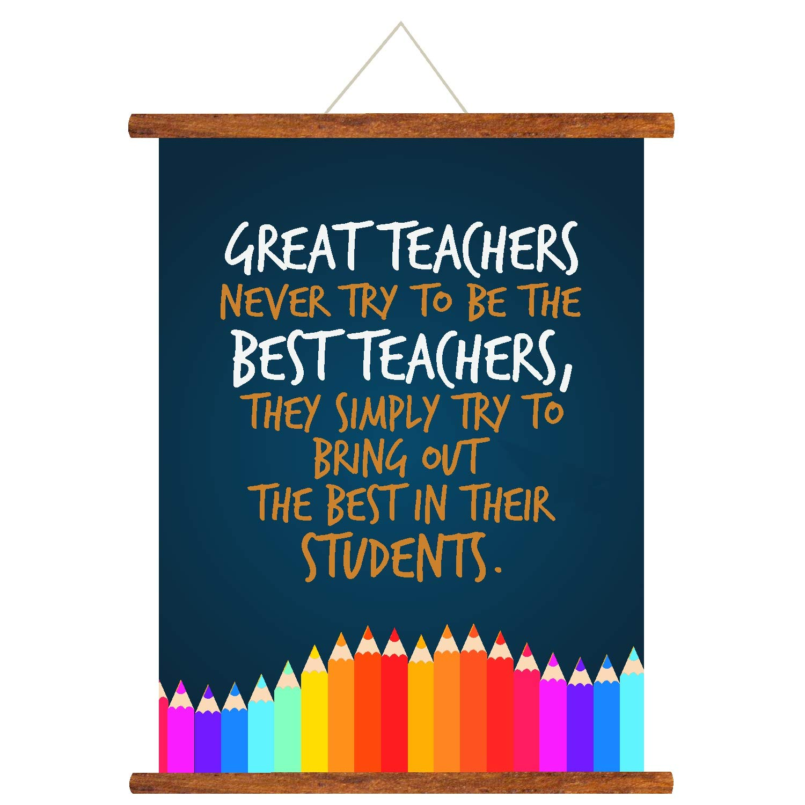
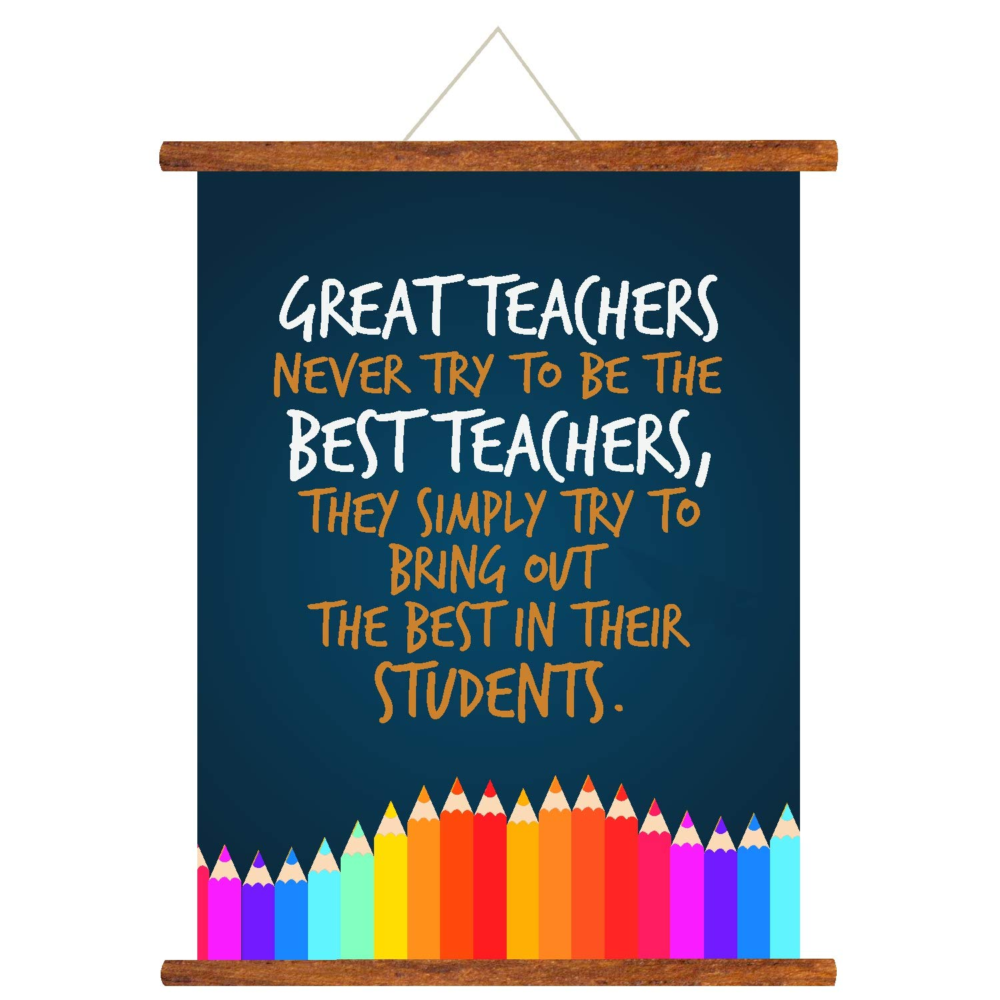

You might not realize the power of simple words as a thank you can go a long way. In this fast-paced world, we forget to express gratitude to one another. Thus, Teachers Day serves as the perfect opportunity to express our gratitude to our beloved teachers present here.
Every day is a blessing because of my dear teachers. Their selflessness and love help me grow and learn new things. Each day our teachers show up for us despite various hardships that they do not discuss, thus, it is our turn now to show them we are here for them.
It is because of you dear teachers that we are able to have the skills that we do today. Your experiences have helped us become wiser for the better. No token of appreciation can ever be enough to thank you for what you all have done for us. Time spent with each one of us is nothing short of memorable and we will forever be indebted to you all for shaping our personalities and making us better human beings.
 

© 2020 Tanish Kapur